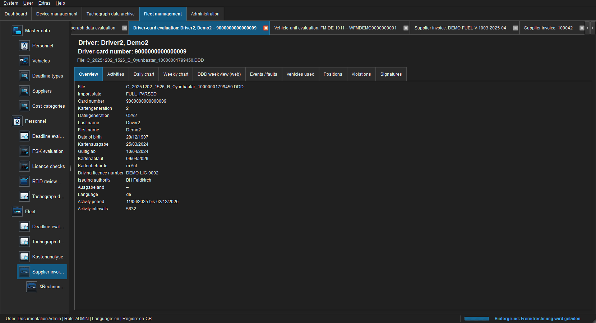
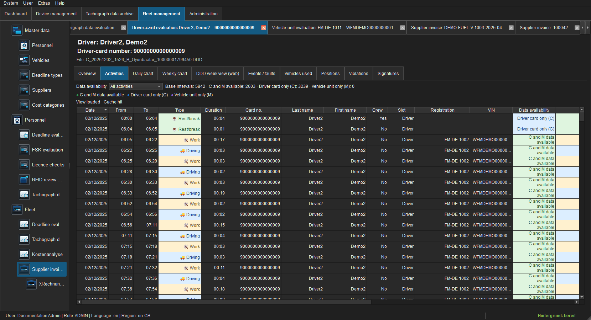
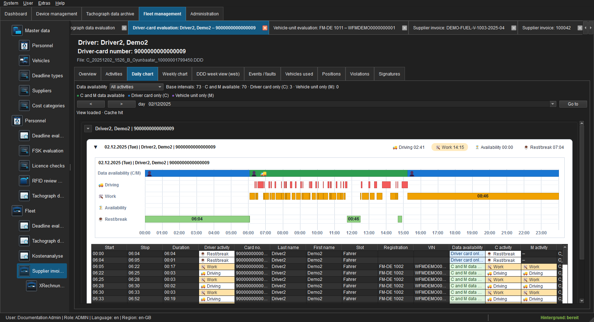
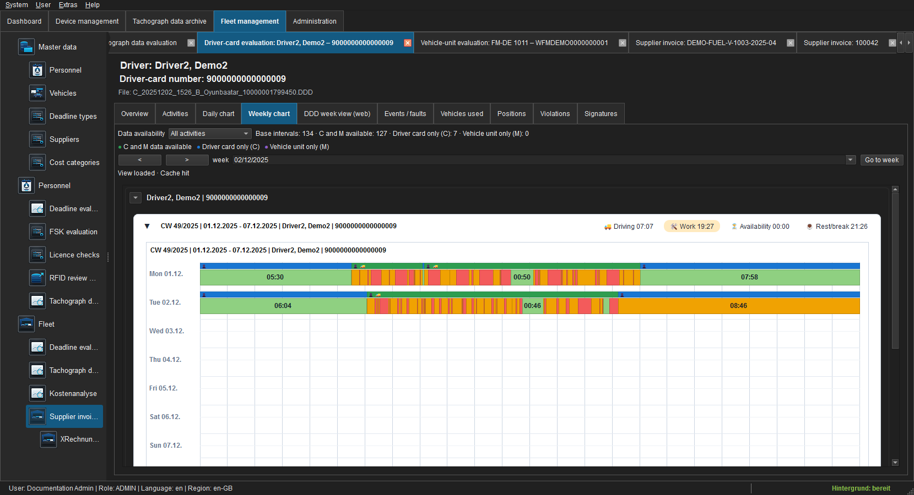
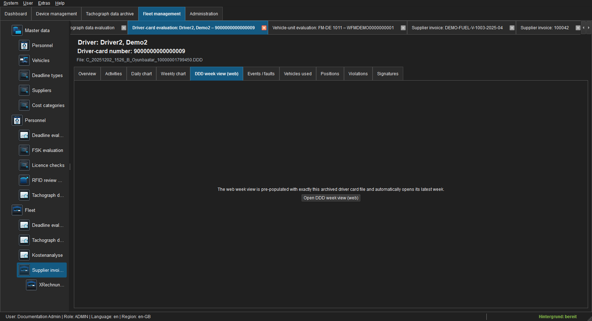
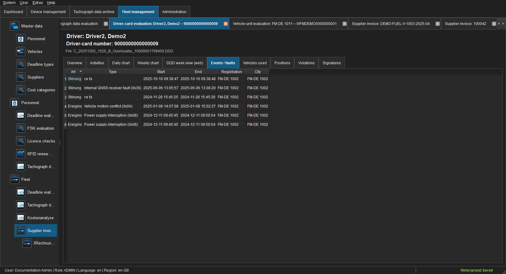
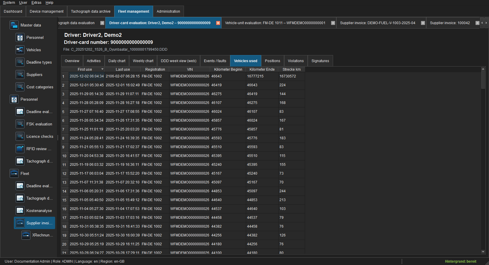
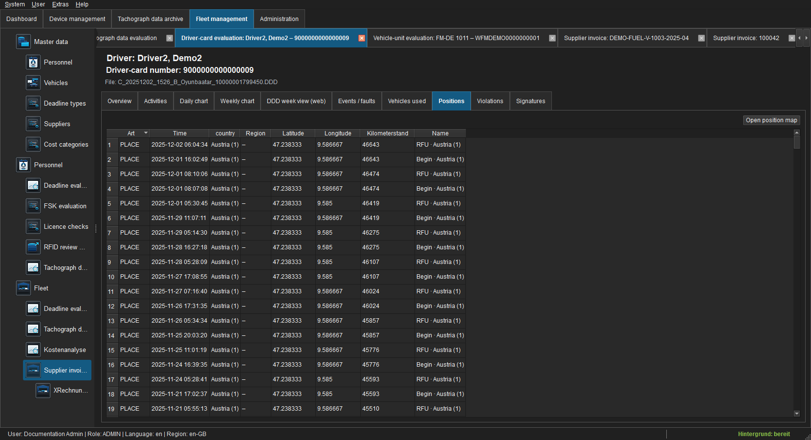
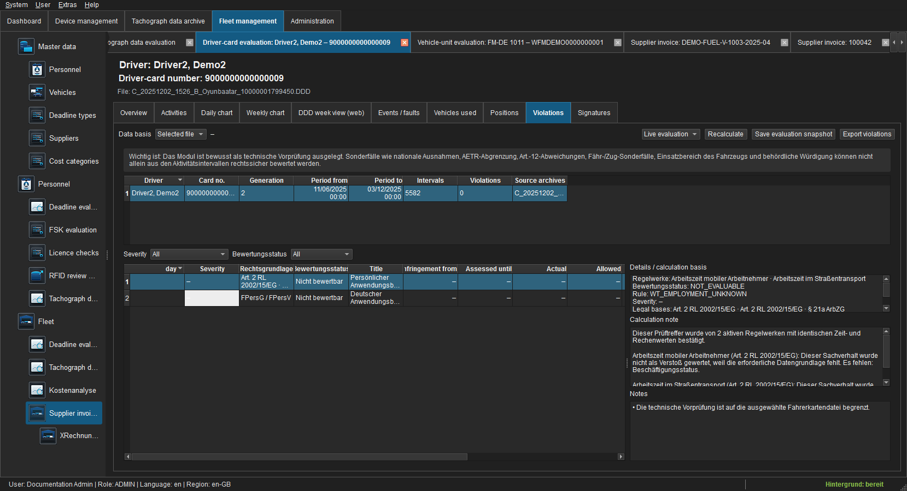
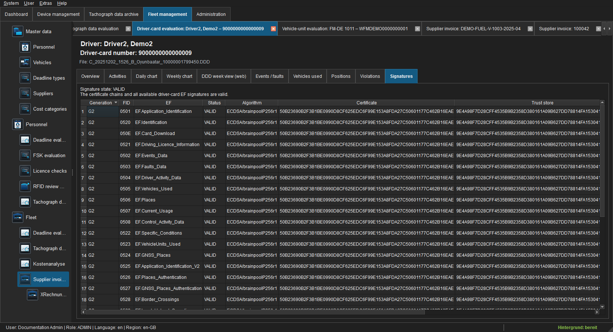

Driver-card analysis¶
The analysis is always bound to one selected C file and archive ID. M data is comparison evidence only. Quarantined files remain viewable but cannot feed an effective combined evaluation.
Overview¶

Figure: Card identity, validity, authorities, generation and data range.The header identifies the anonymised driver, card and file. A quarantine banner explains missing or invalid signature verification. Empty values mean that the selected file does not contain the information or it could not be read safely.
Activities¶

Figure: Sortable UTC intervals with C/M availability.Data availability filters all intervals, C and M available, C only or M only. C remains the base. Rows include start, end, duration, activity, card, slot and counterpart archives; double-click and context actions open unambiguous sources.
The single-file view remains archive-scoped. Personnel record > Day/Week/Violations, by contrast, combines all valid card links for that person, including card changes. The heading identifies record or archive scope and must be considered when interpreting totals.
Day chart¶

Figure: One UTC day with driving, work, availability and rest/break.The date, arrow buttons and Go to change the visible day. The availability track indicates C/M coverage, while activity tracks show business intervals. The detail grid remains sortable.
Read left to right in UTC. Colour and label distinguish driving, other work, availability and rest/break; gaps and overlaps are not smoothed. Hover a segment for start, end, duration, source and availability. Day totals apply to the visible day, not the entire file.
Week chart¶

Figure: ISO week from Monday to Sunday.Seven UTC days are shown together. Empty days remain visible and are not interpreted as activity. Totals and tooltips refer to the selected file and visible period.
Week arrows move between ISO weeks; Go to selects the week containing a date. Review coverage and card validity first, then daily patterns and weekly totals. An empty or partially covered day is not evidence of rest.
DDD week view Web¶

Figure: Secure in-app entry point to the browser-based week view.The page starts the local web view through a tokenised hand-off; local archive paths do not appear in its URL. Documentation deliberately does not load a signed original DDD into an external page.
Events and faults¶

Figure: Technical event and fault records.Codes, periods, vehicles and descriptions come from the selected card. An empty page means no matching record exists; it does not mean records were removed.
Vehicles used¶

Figure: Vehicle references with usage range and odometer values.Only vehicles reported by this C file are listed. A vehicle-record link is offered only for an unambiguous master-data match.
Positions¶

Figure: PLACE and GNSS records with nation, region and coordinates.Open position map displays visible coordinates. Nation and region are shown as readable text plus technical value where possible. See Position maps.
Violations¶

Figure: Reproducible technical pre-check for the selected C file.The list explains rule, article, actual/target value, deviation and legal basis. It does not replace legal assessment of national exemptions, AETR or Article 12 cases. Saving a snapshot requires archive.manage; export requires archive.export.
Select evaluation period and enabled rule modules and recalculate whenever context changes. Results identify ruleset/module version, assessment range, calculation basis and severity; optional BALM amounts are guidance, not a fine decision. Review coverage and notices before each finding. Cross-module findings are consolidated only for the same driver, period and fact pattern.
Signatures¶

Figure: Certificate chain and signed-EF results.VALID confirms a verified chain and all present signatures. INVALID and UNVERIFIABLE quarantine the file; the unchanged archive object remains available for evidence-preserving export.